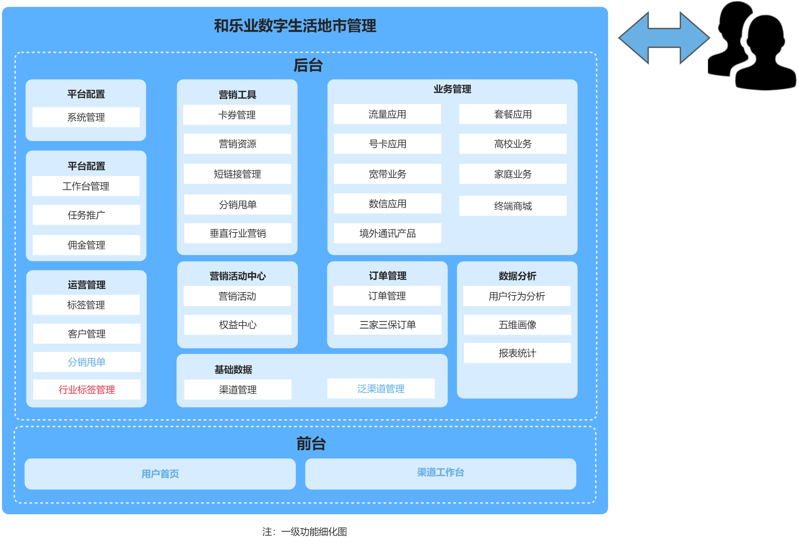
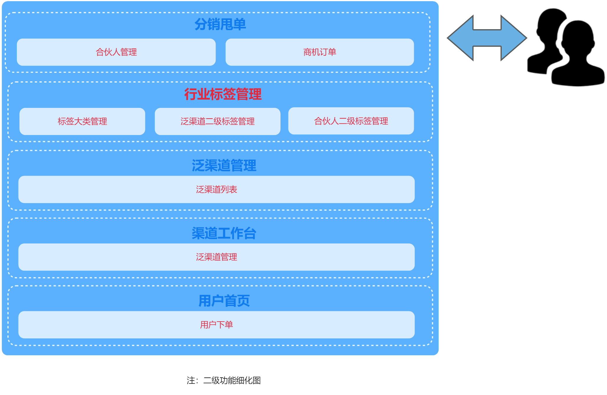

| 模型填写顺序为： 1 环境图：填写建设目标、建设必要性，并绘制环境图。 2 项目规模：填写拆分功能点，自动计算评估结果，查看度量阶段的ΣCFP。 3 调整因子：根据实际情况对调整因子进行取值。 4 估算结果：自动计算评估结果。 |
|
| 蓝色单元格 | 关联填写“功能规模（功能点）”值和类比计算填入“工期（人天）”数 |
| 白色单元格 | 填写建设目标和建设必要性，绘制环境图，功能点拆分填写、下拉选择单元 |
| 深灰单元格 | 模板格式说明部分，不得修改 |
| 浅灰单元格 | 模板参数部分，默认为国际标准推荐取值，各省可按直接使用，也可以按照实际情况适当调参。 |
| 绿色单元格 | 自动计算或引用数据，不得修改 |
| 1. 建设目标 | ||||||||||||
| 本次将建立层级化行业标签管理体系，在省后台新增 “标签大类管理” 功能，支持一级标签大类的增删改查及导入导出，并分别搭建 “泛渠道二级标签管理” 与 “合伙人二级标签管理”，实现二级标签独立配置且与一级标签大类关联，形成完整二级标签树；同步改造泛渠道、合伙人管理相关模块，在地市后台及渠道工作台的创建 / 编辑界面将原单级行业标签下拉框升级为一级与二级行业标签联动选择模式，并对应修改列表搜索条件、展示字段、导入导出模板及接口，保障两类主体行业标签信息完整存储与展示；同时对统一订单管理、商机订单管理、旧版分销甩单订单管理模块进行改造，新增一级、二级行业标签搜索条件与列表字段，优化查询、导出接口及订单写入、数据同步逻辑，确保新订单可携带二级标签信息并同步至经分数据文件；全过程兼顾数据兼容与平滑过渡，改造内容均兼容原有历史数据，对未配置二级标签的数据设置合理默认处理逻辑，保障系统升级期间业务正常运行不中断。 | ||||||||||||
| 2.建设必要性 | ||||||||||||
| 当前乐业平台内泛渠道、合伙人的行业标签仅支持单级选择，无法体现行业大类与细分领域的层级关系，随着业务发展，泛渠道及合伙人数量快速增长、涉及行业类型日趋多样，单级标签已难以满足精细化分类管理需求，进而出现标签管理混乱、名称重复且含义模糊、难以体系化分类维护，数据统计无法按行业大类聚合分析导致报表不准、不利于业务决策，部分订单流程未记录行业标签造成营销分析数据不完整，以及无法基于二级标签构建细颗粒度渠道与合伙人画像、限制精准营销投放效果等问题，因此亟需对行业标签实施层级化改造并同步优化相关业务模块，提升系统对泛渠道及合伙人的管理支撑能力，为后续数据驱动运营夯实基础。 | ||||||||||||
| 3. 系统架构图 | ||||||||||||
 |
||||||||||||
| 如图3.1所示 为了关于和乐业泛渠道及合伙人行业标签改造的需求，本次主要优化了行业标签、分销甩单、泛渠道管理等一级功能 | ||||||||||||
 |
||||||||||||
| 如3.2所示 为了关于和乐业泛渠道及合伙人行业标签改造的需求，本次主要优化标签大类列表、泛渠道二级标签、商机订单等二级功能 | ||||||||||||
| 图例： | 红色字体为新增模块 | |||||||||||
| 蓝色字体为优化模块 | ||||||||||||
| 黑色字体原有模块 | ||||||||||||
| 4. 关键时序图/业务逻辑图 | ||||||||||||
| 无 | ||||||||||||
| 通用软件评估模型 | ||||||||||||
| 度量策略阶段 | 映射阶段 | 度量阶段 | ||||||||||
| 客户需求 | 功能用户需求 | 功能用户 | 触发事件 | 功能过程 | 子过程描述 | 数据移动类型 | 数据组 | 数据属性 | 复用度 | CFP | ||
| 一级模块 | 二级模块 | 三级模块 | ||||||||||
| 具备正式工单号的项目名称 | 本次需求需要改造的本项目（或子系统）中已有的一级业务功能名称，或者本次需求新增的本项目（或子系统）的一级业务功能名称 | 本次需求需要改造的本项目（或子系统）中已有的二级业务功能名称，或者本次需求新增的本项目（或子系统）的二级业务功能名称 | 本次需求需要改造的本项目（或子系统）中已有的三级业务功能名称，或者本次需求新增的本项目（或子系统）的三级业务功能名称。选填。 | 一个（类）用户是软件块的功能性用户需求中数据的发送者或者预期的接收者。（功能用户可能是自然人、系统、程序、模块）若数据发起者有多个，要求拆分为1对1 的进行填写。 | 待度量软件的功能性用户需求中可识别的一个事件，此事件使得一个或多个软件功能用户产生一个或多个数据组，每个数据组随后被一个触发输入所移动。 | 1、体现了待度量软件的功能性用户需求基本部件的一组数据移动，该功能处理在该FUR中是独一无二的，并能独立于该FUR的其他功能处理被定义。 2、一个功能处理可能只有一个触发输入。每个功能处理在接受到由其触发输入数据移动所移动的一个数据组后，开始进行处理。 3、一个功能处理的所有数据移动的集合是满足其FUR的触发输入所有可能的响应所需的集合。 4、建议功能过程的名字字数控制在5-20。 |
1、每个功能处理由一系列子过程组成。 2、一个子处理可以是一个数据移动或者数据运算。 3、一个功能过程至少需要包括两个或两个以上子过程描述 4、建议子过程描述的字数控制在50以内。 |
COSMIC规定的四种数据移动类型。包括：输入（E）输出（X）读（R）写（W），四选一。每个功能过程的数据移动类型的第一步必须是E，最后一步必须是W或者X。 |
数据组是一个唯一的、非空的、无序的数据属性的集合。 | 一个数据属性是一个已识别的数据组中最小的信息单元，每个数据组一般需要包括三个或三个以上的数据属性。 | 表示该功能子过程的复用程度。复用度一般分为三种，即新增、复用和利旧。每一个数据移动表示1个CFP，可根据下拉选项选择。 | COSMIC功能点。根据复用度对功能点进行取值，“新增”记1CFP，“复用”记1/3CFP，“利旧”不计入功能点（0CFP）。 |
| 关于和乐业泛渠道及合伙人行业标签改造的需求 | 分销甩单 | 合伙人管理 | 合伙人列表 | 发起者：操作员 接收者：和乐业地市后台 |
用户触发 | 合伙人界面展示 | 点击进入合伙人列表界面获取数据库中数据指令 | E | 合伙人列表数据 | 编码、合伙人名称、发展人、发展渠道信息、结算方式、所在区县、创建时间、一级行业标签、二级行业标签、合伙人类型、是否绑定身份证 | 新增 | 1.00 |
| 从数据库中读取合伙人列表数据 | R | 从数据库获取客群标签列表数据 | 待展示的编码、合伙人名称、发展人、发展渠道信息、结算方式、所在区县、创建时间、一级行业标签、二级行业标签、合伙人类型、是否绑定身份证 | 新增 | 1.00 | |||||||
| 页面接收传输过来的数据，进行渲染并可视化展示给用户 | X | 渲染后展示的数据 | 展示数据在合伙人列表界面上的样式属性、数据展示内容包含编码、合伙人名称、发展人、发展渠道信息、结算方式、所在区县、创建时间、一级行业标签、二级行业标签、合伙人类型、是否绑定身份证 | 新增 | 1.00 | |||||||
| 合伙人新增 | 发起者：操作员 接收者：和乐业地市后台 |
用户触发 | 合伙人新增 | 点击新增按钮进入合伙人的新增页面输入相关的信息后点击提交 | E | 合伙人列表新增数据 | 合伙人名称、发展人、发展渠道信息、结算方式、所在区县、创建时间、一级行业标签、二级行业标签、合伙人类型 | 新增 | 1.00 | |||
| 将合伙人新增的存储至数据表中 | W | 存储合伙人数据 | 存储合伙人名称、发展人、发展渠道信息、结算方式、所在区县、创建时间、一级行业标签、二级行业标签、合伙人类型 | 新增 | 1.00 | |||||||
| 商机订单 | 商机订单列表 | 发起者：操作员 接收者：和乐业地市后台 |
用户触发 | 新增商机订单列表 | 点击进入商机订单后获取商机订单数据库中数据指令 | E | 商机订单列表数据 | 订单编码、客户号码、客户名称、客群区县、客户地址、商机名称、商机描述、佣金范围、实际佣金、结算方式、商机因为类型、实际办理业务、合伙人信息、发展人信息、发展人渠道信息、订单状态、当前环节 | 新增 | 1.00 | ||
| 从数据库中获取商机订单的数据 | R | 从数据库获取商机订单列表数据 | 待展示的订单编码、客户号码、客户名称、客群区县、客户地址、商机名称、商机描述、佣金范围、实际佣金、结算方式、商机因为类型、实际办理业务、合伙人信息、发展人信息、发展人渠道信息、订单状态、当前环节 | 新增 | 1.00 | |||||||
| 页面接收到传输的商机订单数据并进行渲染可视化展示 | X | 渲染后展示商机订单数据 | 展示数据在商机订单列表界面上的样式属性、数据展示内容包含订单编码、客户号码、客户名称、客群区县、客户地址、商机名称、商机描述、佣金范围、实际佣金、结算方式、商机因为类型、实际办理业务、合伙人信息、发展人信息、发展人渠道信息、订单状态、当前环节 | 新增 | 1.00 | |||||||
| 商机订单导出 | 发起者：操作员 接收者：和乐业地市后台 |
用户触发 | 商机订单列表数据导出 | 点击导出按钮执行商机订单列表数据导出指令 | E | 商机订单列表数据筛选数据 | 筛选出的商机订单列表数据 | 新增 | 1.00 | |||
| 生成商机订单列表下载文件 | W | 格式化的文件数据 | 文件名称、文件格式、文件内容包含订单编码、客户号码、客户名称、客群区县、客户地址、商机名称、商机描述、佣金范围、实际佣金、结算方式、商机因为类型、实际办理业务、合伙人信息、发展人信息、发展人渠道信息、订单状态、当前环节 | 新增 | 1.00 | |||||||
| 返回商机订单列表结果及提供下载入口 | X | 反馈商机订单列表导出操作的最终结果，并在成功时提供导出文件的下载入口 | 商机订单列表数据导出、下载入口 | 新增 | 1.00 | |||||||
| 行业标签管理 | 标签大类管理 | 标签大类列表 | 发起者：操作员 接收者：和乐业地市后台 |
用户触发 | 标签大类列表界面 | 点击进入标签大类列表界面执行数据查询指令 | E | 标签大类列表数据 | 序号、标签大类名称、创建时间 | 新增 | 1.00 | |
| 从数据库中获取标签大类列表数据 | R | 从数据库获取标签大类列表数据 | 待展示的序号、标签大类名称、创建时间 | 新增 | 1.00 | |||||||
| 页面接收到传输的标签大类列表数据并进行渲染可视化展示 | X | 渲染后展示标签大类列表数据 | 展示数据在标签大类列表界面上的样式属性、数据展示内容包含序号、标签大类名称、创建时间 | 新增 | 1.00 | |||||||
| 标签大类数据处理 | 发起者：操作员 接收者：和乐业地市后台 |
用户触发 | 标签大类列表数据新增 | 点击标签大类列表数据新增按钮输入内容并提交 | E | 标签大类列表新增数据 | 新增的序号、标签大类名称、创建时间 | 新增 | 1.00 | |||
| 将新增的标签大类列表数据进行存储 | W | 存储标签大类列表数据 | 存储序号、标签大类名称、创建时间 | 新增 | 1.00 | |||||||
| 标签大类列表数据编辑 | 点击标签大类列表数据编辑按钮输入内容并提交 | E | 标签大类列表修改的数据 | 修改的标签大类名称、修改时间 | 新增 | 1.00 | ||||||
| 将修改的标签大类列表数据进行存储 | W | 存储标签大类列表数据 | 存储修改的标签大类名称、修改时间 | 新增 | 1.00 | |||||||
| 标签大类列表数据删除 | 点击标签大类列表数据删除按钮执行数据删除指令 | E | 标签大类列表数据ID | 待删除数据ID | 新增 | 1.00 | ||||||
| 删除对应的标签大类列表数据 | W | 删除列表数据 | 删除对应标签大类数据 | 新增 | 1.00 | |||||||
| 标签大类列表数据删除日志 | W | 删除日志存储 | 删除时间、数据ID、删除人 | 新增 | 1.00 | |||||||
| 标签大类列表数据导入模板下载 | 点击标签大类列表数据导入模板下载按钮执行模板下载请求 | E | 标签大类列表数据导入模板下载请求 | 模板类型、请求数据 | 新增 | 1.00 | ||||||
| 服务器接收下载请求并查询对应模板文件 | R | 预设的模板文件 | 模板文件名称、文件格式、模板内容（标签大类名称） | 新增 | 1.00 | |||||||
| 客户端结束文件并转换成文件格式，提供下载路径 | X | 文件下载信息 | 标签大类列表数据导入文件名、下载路径 | 新增 | 1.00 | |||||||
| 标签大类列表数据导入 | 上传导入文件执行标签大类列表数据导入指令 | E | 标签大类列表数据导入文件 | 用户信息、导入文件名称、文件路径 | 新增 | 1.00 | ||||||
| 把文件存储到标签大类列表数据表 | W | 需存储的标签大类列表数据 | 标签大类名称、导入时间 | 新增 | 1.00 | |||||||
| 标签大类列表数据导出 | 点击导出按钮接收标签大类列表数据导出请求 | E | 标签大类列表数据筛选数据 | 筛选出的标签大类列表数据导出数据 | 新增 | 1.00 | ||||||
| 生成标签大类列表可下载文件 | W | 格式化的文件数据 | 文件名称、文件格式、文件内容 | 新增 | 1.00 | |||||||
| 返回标签大类列表数据导出结果及提供下载入口 | X | 反馈标签大类列表数据导出操作的最终结果，并在成功时提供导出文件的下载入口 | 标签大类列表数据导出结果、下载入口 | 新增 | 1.00 | |||||||
| 泛渠道二级标签管理 | 泛渠道二级标签列表 | 发起者：操作员 接收者：和乐业地市后台 |
用户触发 | 新增泛渠道二级标签列表 | 点击进入泛渠道二级标签界面执行数据查询指令 | E | 泛渠道二级标签数据 | 序号、泛渠道二级标签名称、创建时间 | 新增 | 1.00 | ||
| 从数据库中获取泛渠道二级标签数据 | R | 从数据库获取泛渠道二级标签数据 | 待展示的序号、泛渠道二级标签名称、创建时间 | 新增 | 1.00 | |||||||
| 页面接收到传输的泛渠道二级标签并进行渲染可视化展示 | X | 渲染后展示泛渠道二级标签 | 展示数据在泛渠道二级标签列表界面上的样式属性、数据展示内容包含序号、泛渠道二级标签名称、创建时间 | 新增 | 1.00 | |||||||
| 泛渠道二级标签管理数据处理 | 发起者：操作员 接收者：和乐业地市后台 |
用户触发 | 泛渠道二级标签列表数据新增 | 点击泛渠道二级标签列表新增按钮输入内容并提交 | E | 泛渠道二级标签列表新增数据 | 新增的序号、泛渠道二级标签名称、创建时间 | 新增 | 1.00 | |||
| 将新增的泛渠道二级标签列表数据进行存储 | W | 存储泛渠道二级标签列表数据 | 存储序号、泛渠道二级标签名称、创建时间 | 新增 | 1.00 | |||||||
| 泛渠道二级标签列表数据编辑 | 点击泛渠道二级标签列表编辑按钮输入内容并提交 | E | 泛渠道二级标签列表修改的数据 | 修改的泛渠道二级标签名称、修改时间 | 新增 | 1.00 | ||||||
| 将修改的泛渠道二级标签列表数据进行存储 | W | 存储泛渠道二级标签列表数据 | 存储修改的泛渠道二级标签名称、修改时间 | 新增 | 1.00 | |||||||
| 泛渠道二级标签列表数据删除 | 点击泛渠道二级标签列表数据删除按钮执行数据删除指令 | E | 泛渠道二级标签列表数据ID | 待删除数据ID | 新增 | 1.00 | ||||||
| 删除对应的泛渠道二级标签列表数据 | W | 删除列表数据 | 删除对应泛渠道二级标签列表数据 | 新增 | 1.00 | |||||||
| 泛渠道二级标签列表数据导入 | 上传导入文件执行泛渠道二级标签列表数据导入指令 | E | 泛渠道二级标签列表数据导入文件 | 用户信息、导入文件名称、文件路径 | 新增 | 1.00 | ||||||
| 把文件存储到泛渠道二级标签列表数据表 | W | 需存储的泛渠道二级标签列表数据 | 泛渠道二级标签名称、导入时间 | 新增 | 1.00 | |||||||
| 泛渠道二级标签列表数据导出 | 点击导出按钮接收泛渠道二级标签列表数据导出请求 | E | 泛渠道二级标签列表数据筛选数据 | 筛选出的泛渠道二级标签列表导出数据 | 新增 | 1.00 | ||||||
| 生成泛渠道二级标签列表数据可下载文件 | W | 格式化的文件数据 | 文件名称、文件格式、文件内容 | 新增 | 1.00 | |||||||
| 返回泛渠道二级标签列表数据导出结果及提供下载入口 | X | 反馈泛渠道二级标签列表数据导出操作的最终结果，并在成功时提供导出文件的下载入口 | 泛渠道二级标签列表数据导出结果、下载入口 | 新增 | 1.00 | |||||||
| 合伙人二级标签管理 | 合伙人二级标签列表 | 发起者：操作员 接收者：和乐业地市后台 |
用户触发 | 新增合伙人二级标签列表 | 点击进入合伙人二级标签列表界面执行数据查询指令 | E | 合伙人二级标签列表数据 | 序号、合伙人二级标签标签名称、创建时间 | 新增 | 1.00 | ||
| 从数据库中获取合伙人二级标签列表数据 | R | 从数据库获取合伙人二级标签数据 | 待展示的序号、合伙人二级标签名称、创建时间 | 新增 | 1.00 | |||||||
| 页面接收到传输的合伙人二级标签并进行渲染可视化展示 | X | 渲染后展示合伙人二级标签 | 展示数据在合伙人二级标签列表界面上的样式属性、数据展示内容包含序号、合伙人二级标签名称、创建时间 | 新增 | 1.00 | |||||||
| 合伙人二级标签数据处理 | 发起者：操作员 接收者：和乐业地市后台 |
用户触发 | 读取行业标签大类数据 | 点击标签大类数据读取可选择的标签大类数据 | E | 可选择的标签大类数据 | 标签大类数据 | 新增 | 1.00 | |||
| 选择对应的标签大类数据并跟进序号进行排列展示 | X | 展示可选择的标签大类数据 | 标签大类数据选择列表 | 新增 | 1.00 | |||||||
| 合伙人二级标签列表数据新增 | 点击合伙人二级标签列表数据新增按钮输入内容并提交 | E | 合伙人二级标签列表数据 | 新增的序号、合伙人二级标签名称、所属标签大类、创建时间 | 新增 | 1.00 | ||||||
| 将新增的合伙人二级标签数据进行存储 | W | 存储合伙人二级标签列表数据 | 存储的序号、合伙人二级标签名称、所属标签大类、创建时间 | 新增 | 1.00 | |||||||
| 合伙人二级标签列表数据编辑 | 点击合伙人二级标签列表编辑按钮输入内容并提交 | E | 合伙人二级标签列表修改的数据 | 修改的合伙人二级标签名称、所属标签大类、修改时间 | 新增 | 1.00 | ||||||
| 将修改的合伙人二级标签列表数据进行存储 | W | 存储合伙人二级标签列表数据 | 存储修改的合伙人二级标签名称、所属标签大类、修改时间 | 新增 | 1.00 | |||||||
| 合伙人二级标签列表数据删除 | 点击合伙人二级标签列表删除按钮执行数据删除指令 | E | 合伙人二级标签列表数据ID | 待删除数据ID | 新增 | 1.00 | ||||||
| 删除对应的合伙人二级标签列表数据 | W | 删除列表数据 | 删除对应合伙人二级标签列表数据 | 新增 | 1.00 | |||||||
| 合伙人二级标签列表数据导入 | 上传导入文件执行合伙人二级标签列表数据导入指令 | E | 合伙人二级标签列表数据导入文件 | 用户信息、导入文件名称、文件路径 | 新增 | 1.00 | ||||||
| 把文件存储到合伙人二级标签列表数据表 | W | 需存储的合伙人二级标签列表数据 | 合伙人二级标签名称、所属标签大类、导入时间 | 新增 | 1.00 | |||||||
| 合伙人二级标签列表数据导出 | 点击导出按钮接收合伙人二级标签列表导出请求 | E | 合伙人二级标签列表数据筛选数据 | 筛选出的合伙人二级标签列表导出数据 | 新增 | 1.00 | ||||||
| 生成合伙人二级标签列表可下载文件 | W | 格式化的文件数据 | 文件名称、文件格式、文件内容 | 新增 | 1.00 | |||||||
| 返回合伙人二级标签列表导出结果及提供下载入口 | X | 反馈合伙人二级标签列表导出操作的最终结果，并在成功时提供导出文件的下载入口 | 合伙人二级标签列表数据导出结果、下载入口 | 新增 | 1.00 | |||||||
| 合伙人二级标签列表数据状态更改 | 点击状态更改提交合伙人二级标签列表数据更改请求 | E | 合伙人二级标签列表数据更改请求 | 合伙人二级标签列表ID、模板状态 | 新增 | 1.00 | ||||||
| 更新合伙人二级标签列表数据状态 | W | 合伙人二级标签列表数据表 | 合伙人二级标签列表数据新状态、操作时间 | 新增 | 1.00 | |||||||
| 泛渠道管理 | 泛渠道列表 | 泛渠道列表 | 发起者：操作员 接收者：和乐业地市后台 |
用户触发 | 新增泛渠道列表界面 | 点击进入泛渠道列表界面执行数据查询指令 | E | 泛渠道列表数据 | 编号、泛渠道名称、泛渠道编码、渠道19位编码、申请失败原因、一级行业标签、二级行业标签、泛渠道分类、发展人、所属渠道名称 | 新增 | 1.00 | |
| 从数据库中获取泛渠道列表数据 | R | 从数据库获取泛渠道列表数据 | 待展示的编号、泛渠道名称、泛渠道编码、渠道19位编码、申请失败原因、一级行业标签、二级行业标签、泛渠道分类、发展人、所属渠道名称 | 新增 | 1.00 | |||||||
| 页面接收到传输的泛渠道列表数据并进行渲染可视化展示 | X | 渲染后展示泛渠道列表数据 | 展示数据在合伙人二级标签列表界面上的样式属性、数据展示内容包含编号、泛渠道名称、泛渠道编码、渠道19位编码、申请失败原因、一级行业标签、二级行业标签、泛渠道分类、发展人、所属渠道名称 | 新增 | 1.00 | |||||||
| 泛渠道列表数据处理 | 发起者：操作员 接收者：和乐业地市后台 |
用户触发 | 泛渠道列表数据新增 | 点击泛渠道列表数据新增按钮输入内容并提交 | E | 新增泛渠道列表数据 | 新增的泛渠道名称、泛渠道编码、渠道19位编码、申请失败原因、一级行业标签、二级行业标签、泛渠道分类、发展人、所属渠道名称 | 新增 | 1.00 | |||
| 将新增的泛渠道列表数据进行存储 | W | 存储泛渠道列表数据 | 存储泛渠道名称、泛渠道编码、渠道19位编码、申请失败原因、一级行业标签、二级行业标签、泛渠道分类、发展人、所属渠道名称 | 新增 | 1.00 | |||||||
| 泛渠道列表数据编辑 | 点击泛渠道列表数据编辑按钮输入内容并提交 | E | 编辑泛渠道列表数据 | 编辑的泛渠道名称、泛渠道编码、渠道19位编码、申请失败原因、一级行业标签、二级行业标签、泛渠道分类、发展人、所属渠道名称 | 新增 | 1.00 | ||||||
| 将新修改的泛渠道列表数据进行存储 | W | 存储修改的泛渠道列表数据 | 存储修改的泛渠道名称、泛渠道编码、渠道19位编码、申请失败原因、一级行业标签、二级行业标签、泛渠道分类、发展人、所属渠道名称 | 新增 | 1.00 | |||||||
| 泛渠道列表导入模板下载 | 点击泛渠道列表导入模板下载按钮执行模板下载请求 | E | 泛渠道列表导入模板下载请求 | 模板类型、请求数据 | 新增 | 1.00 | ||||||
| 服务器接收下载请求并查询对应模板文件 | R | 预设的模板文件 | 模板文件名称、文件格式、模板内容（泛渠道名称、泛渠道编码、渠道19位编码、、一级行业标签、二级行业标签、泛渠道分类、发展人、所属渠道名称） | 新增 | 1.00 | |||||||
| 客户端结束文件并转换成文件格式，提供下载路径 | X | 文件下载信息 | 泛渠道列表数据导入文件名、下载路径 | 新增 | 1.00 | |||||||
| 泛渠道列表数据导入 | 上传导入文件执行泛渠道列表数据导入指令 | E | 泛渠道列表数据导入文件 | 用户信息、导入文件名称、文件路径 | 新增 | 1.00 | ||||||
| 把文件存储到泛渠道列表数据表 | W | 需存储的泛渠道列表数据 | 导入泛渠道名称、泛渠道编码、渠道19位编码、申请失败原因、一级行业标签、二级行业标签、泛渠道分类、发展人、所属渠道名称 | 新增 | 1.00 | |||||||
| 泛渠道列表数据导出 | 点击导出按钮接收泛渠道列表数据导出请求 | E | 泛渠道列表数据筛选数据 | 筛选出的泛渠道列表数据导出数据 | 新增 | 1.00 | ||||||
| 生成泛渠道列表数据可下载文件 | W | 格式化的文件数据 | 文件名称、文件格式、文件内容（泛渠道名称、泛渠道编码、渠道19位编码、申请失败原因、一级行业标签、二级行业标签、泛渠道分类、发展人、所属渠道名称） | 新增 | 1.00 | |||||||
| 返回泛渠道列表数据导出结果及提供下载入口 | X | 反馈泛渠道列表数据导出操作的最终结果，并在成功时提供导出文件的下载入口 | 泛渠道列表数据数据导出结果、下载入口 | 新增 | 1.00 | |||||||
| 渠道工作台 | 泛渠道管理 | 泛渠道管理H5界面 | 发起者：操作员 接收者：和乐业地市后台 |
用户触发 | 泛渠道管理H5界面 | 点击进入泛渠道列表界面执行数据查询指令 | E | 泛渠道列表数据 | 泛渠道名称、渠道类型、一级行业标签、二级行业标签 | 新增 | 1.00 | |
| 从数据库中获取泛渠道列表数据 | R | 从数据库获取泛渠道列表数据 | 待展示的泛渠道名称、渠道类型、一级行业标签、二级行业标签 | 新增 | 1.00 | |||||||
| 页面接收到传输的泛渠道列表数据并进行手机端页面渲染 | X | 渲染后展示泛渠道列表数据 | 展示数据在合伙人二级标签列表界面上的样式属性、数据展示内容包含泛渠道名称、渠道类型、一级行业标签、二级行业标签 | 新增 | 1.00 | |||||||
| 泛渠道注册 | 发起者：操作员 接收者：和乐业地市后台 |
用户触发 | 泛渠道注册页面 | 泛渠道人员扫描二维码进入到注册页面输入注册信息后提交 | E | 新增泛渠道列表数据 | 新增的泛渠道名称、一级行业标签、二级行业标签 | 新增 | 1.00 | |||
| 将新增的泛渠道数据进行存储 | W | 存储泛渠道列表数据 | 存储泛渠道名称、一级行业标签、二级行业标签、邀请人机构号、邀请人手机号 | 新增 | 1.00 | |||||||
| 用户首页 | 用户下单 | 用户登录 | 发起者：操作员 接收者：和乐业地市后台 |
用户触发 | 用户一键登录 | 用户点击一键登录按钮 | E | 登录触发信号 | 设备唯一标识、操作时间、当前网络运营商(移动/联通/电信) | 新增 | 1.00 | |
| 系统获取本机号码 | R | 用户身份数据 | 用户手机号码（脱敏处理）、SIM卡所属运营商、设备当前IP地址 | 新增 | 1.00 | |||||||
| 返回登录结果或跳转页面 | X | 登录响应 | 成功/失败状态、用户昵称（如已注册）、登录后跳转的活动页面 | 新增 | 1.00 | |||||||
| 微信授权登录 | 用户点击微信登录按钮 | E | 微信登录触发信号 | 设备信息、微信开放平台应用ID | 新增 | 1.00 | ||||||
| 系统获取微信用户信息 | R | 微信身份数据 | 微信UnionID、微信昵称、微信头像URL | 新增 | 1.00 | |||||||
| 返回渲染绑定结果 | X | 号码绑定响应 | 绑定状态（成功/失败）、错误信息（如失败） | 新增 | 1.00 | |||||||
| 用户下单 | 发起者：操作员 接收者：和乐业地市后台 |
用户触发 | 用户获取下单验证码 | 用户点击获取下单的验证码 | E | 验证码获取 | 验证码 | 新增 | 1.00 | |||
| 生成随机验证码并发送给用户 | W | 验证码随机生成 | 生成验证码 | 新增 | 1.00 | |||||||
| 用户下单 | 用户输入验证码后执行下单操作 | E | 用户下单 | 业务下单 | 新增 | 1.00 | ||||||
| 调用业务下单接口传输对应营销案进行下单 | R | 调用下单接口 | 营销案编码、用户号码、订单编码 | 新增 | 1.00 | |||||||
| 读取返回的订单受理结果进行存储 | W | 业务受理结果 | 受理成功/受理失败、失败原因 | 新增 | 1.00 | |||||||
| 统一订单同步 | 下单将业务受理结果同步至统一订单 | E | 统一订单同步 | 业务受理订单 | 新增 | 1.00 | ||||||
| 统一业务订单存储传输的业务订单数据 | W | 业务订单存储 | 订单编码、下单号码、业务名称、业务编码、业务类型、分销信息、下单时间、受理时间、受理详情、来源应用通道、来源项目、是否计算佣金、佣金金额 | 新增 | 1.00 | |||||||
| 用于需求变更、重评等场景 1、本次需求需要改造的本项目（或子系统）中已有的一级业务功能名称，或者本次需求新增的本项目（或子系统）的一级业务功能名称 2、本次需求需要改造的本项目（或子系统）中已有的二级业务功能名称，或者本次需求新增的本项目（或子系统）的二级业务功能名称 3、本次需求需要改造的本项目（或子系统）中已有的三级业务功能名称，或者本次需求新增的本项目（或子系统）的三级业务功能名称 注：在A~M列之间不允许增加列；红色文字为说明，蓝色文字为示例，请在正式提交时删除红色文字和蓝色文字。 |
||||||||||||